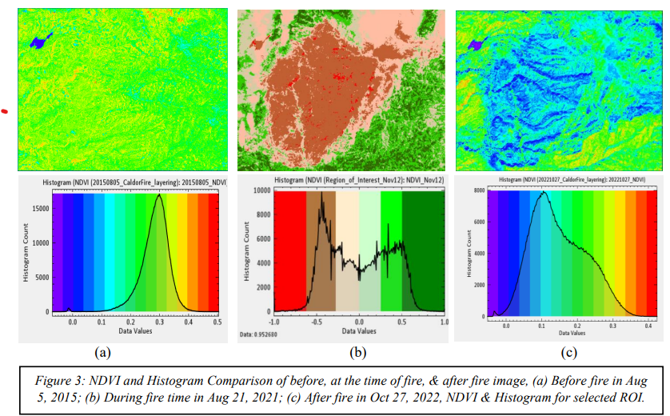
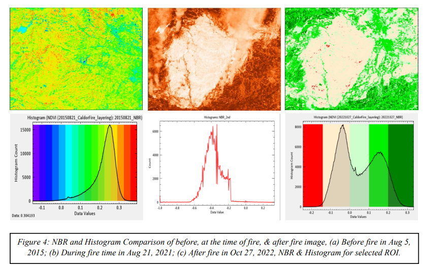
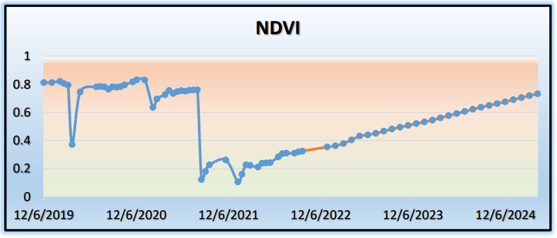
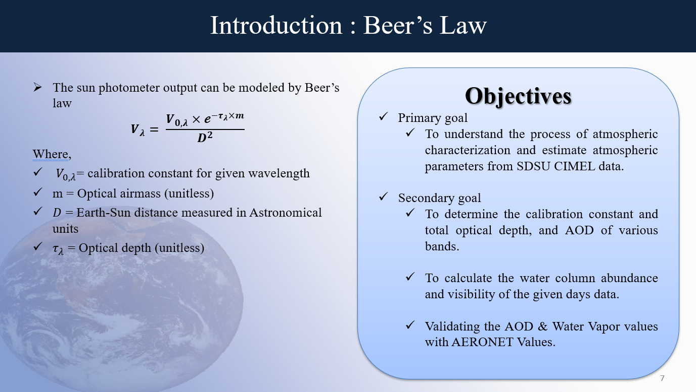
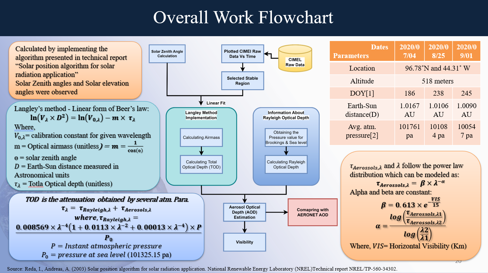
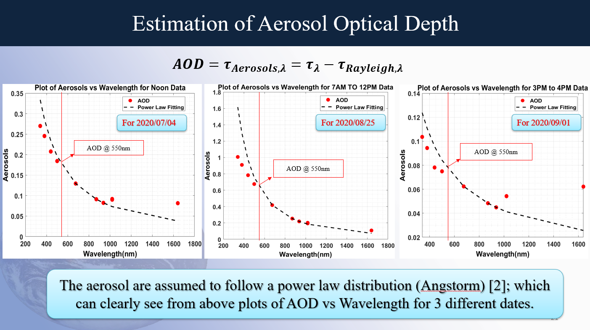
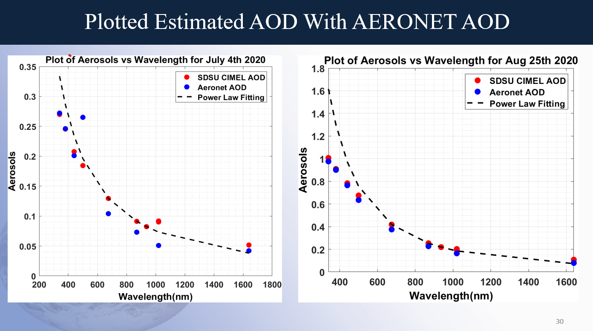
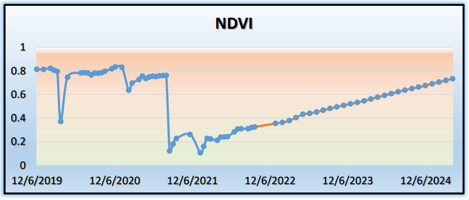
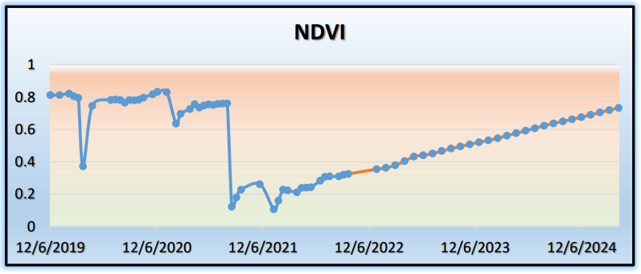

Hello! I'm Rahul Shah, a passionate Electrical and Computer Science Engineer specializing in the dynamic field of image processing. With a solid foundation in developing and implementing cutting-edge algorithms, I thrive on transforming complex concepts into innovative solutions that drive tangible results.
Over the past four years, I've honed my skills in analyzing, processing, and interpreting digital imagery to extract meaningful insights. My journey has equipped me with proficiency in various programming languages, including Python, MATLAB, and C++, along with expertise in machine learning frameworks like TensorFlow.
Beyond technical proficiency, I bring a collaborative spirit and a commitment to excellence to every project I undertake. I thrive in multidisciplinary environments, leveraging my communication and problem-solving skills to foster innovation and drive project success.
I am eager to continue my journey of exploration and discovery, seeking opportunities to push the boundaries of image processing technology and make a meaningful impact on the world. Let's connect and embark on this exciting journey together.
MS in Electrical Engineering
South Dakota State University, Brookings SD | Dec 2023
MS Thesis: Surface Reflectance Product Generation of MSS using SMACAA and Validation with Respect to LEDAPS (To be published)
Relevant Courses: Advance Image Processing, Remote Sensing Engineering, Optical Sensors, Digital Image Processing, Time Series, Non-Parametric Statistics
Bachelor of Electronics and Communication Engineering
Cosmos College of Management and Technology, Pokhara University, Nepal | Sep 2018
Relevant Courses: Antenna, Digital Signal Processing, Numerical Methods, Signal & Systems, Electronic Devices & Circuits, Digital Communications, Wireless Communications, Computer Networks, Research Methodology
Statistical Insights: Time series analysis, parametric and non-parametric statistics
Reporting and Communication: Microsoft Office Suite, LaTeX
Project Management: Leadership, Collaboration, Problem-Solving, Time Management
Experience
Research Scientist | Mar 2024 – Present
Satelytics Inc, Perrysburg, OH
- Applying geospatial analytics to a wide variety of energy industry challenges and extracting new insights from remote sensing data sources.
- Applied remote sensing methods to enhance spatial resolution and align geometry of high-resolution tree height data with multispectral imagery, optimizing accuracy for tree classification. Graduate Research Assistant | Aug 2021 – Dec 2023
SDSU Image Processing Laboratory, Brookings, SD
Algorithm Development:
- Developed Python code for extracting and processing image datasets from various satellite sensors including MODIS, Meteosat, Landsat, Sentinel-2, and Hyperion EO-1 for research analysis.
- Conducted calibration and characterization of EO satellite sensors using advanced image processing algorithms.
- Created MATLAB-based production tools for data conversion and image processing to enhance workflows efficiency.
- Developed and implemented methods to integrate diverse data sources into analysis-ready datasets, enhancing data quality and accessibility.
Data and Error Analysis:
- Conducted in-depth data analysis to identify trends and anomalies, contributing to strategic decision-making.
- Evaluated the performance of SMACAA model on Landsat 1-5 MSS series sensors and generated MSS Level-2 Image Products which consists of GeoTIFF images and XML METEDATA file (Technical Documentation).
- Conducted per-pixel uncertainty analysis of SMACAA model estimated SR using Machine Learning and Monte-carlo simulation method.
- Collaborated with a multidisciplinary team of scientists to interpret experimental results. Graduate Researcher and Technical Writer | July 2020 – Dec 2020
GT Phoenix Consult, Kathmandu, Nepal
- Mentored engineers on projects/research from different concentrations of Electrical and Electronics Engineering.
- Evaluated, standardized, or reviewed technical material prepared by other team members and develop innovative approaches for improvement.
- Designed Hydroponics System prototype to monitor & control hydroponics greenhouse using Raspberry Pi. Telecommunication Engineer | Dec 2018 – June 2020
Vianet Communication, Kathmandu, Nepal
- Provided technical support to customers.
- Analysed, developed, implemented, and troubleshot telecommunications services and solutions.
- Participated in high-level and low-level design review ensuring adherence to best practices and standards.
- Monitored and resolved capacity and performance issues for telecommunications traffic to ensure continued, uninterrupted operation of telecommunications systems.
- Created test reports, analysis documents, regular status reports for projects and service issues.
- Responded to emergency requests, accurately identify, monitor, report, and escalate if required for any serious service interruptions.
- Knowledge of various communication technologies like CISCO, Ciena, TOM and SONET.
Projects
Graduate Projects
- Analysed forest fire effects using Landsat 8 Images, calculating NDVI, burn severity, change detection, and recovery time using ARIMA modelling.



- Characterized the atmosphere using CIMEL SUN photo data, estimated aerosol and water vapor, and Validated results with AERONET data.




- Time Series Analysis of Precipitation Data (Blind Park).
- Estimated Modulation Transfer Function of Landsat 9 OLI images (Panchromatic Band).
- Developed Obstacle and lane detection system for an autonomous vehicle using camera-based approach, Markov random field model and Hough transform algorithm.
Undergraduate Projects
- Designed a Smart Poultry Farm model to control access at farm for an authorized person using Raspberry Pi3, Raspberry Pi Camera, different sensors like DHT11, ULTRASONIC, LDR and DC motor.
Wrote python code on raspberry pi3 to control different sensors and raspberry pi camera.
- Designed and built a remote-controlled robot capable of fighting a tournament against opponent robot using Transmitter, Receiver, ESC, Motor, Gear, Wheel and Weapon.
Honors & Awards
Certificate of completion, Professional Development Program, SDSU Graduate School (April 2023)
Received "RHG- Exceptional Achievement for Science Award" from NASA as a part of Landsat Calibration and Validation Team. (July 2022)
Represented Nepal at Robowars 2019 Techfest organized by Indian Institute of Technology (IIT), Bombay, India. (Dec 2018)
University Topper in the eight semesters. (Sep 2018)
Won Best Weapon award at Battle Bot 2.3, Manual Akhada organized by Astro Botech Pvt. Ltd, Nepal (Jul 2018)
Second runner-up at YANTRA International Robotics Competition, “Automatic Akhada” event organized by Robotics Association of Nepal (Nov 2016)
Dean’s List for all semesters (2014 – 2018)
Merit Undergraduate Scholar, recipient of academic excellence full scholarship for undergraduate studies at Cosmos College of Management and Technology
Fun Fact
Love to play Badminton and Tennis. Reading Novel - Currently reading "Thinking, Fast and Slow".

 
